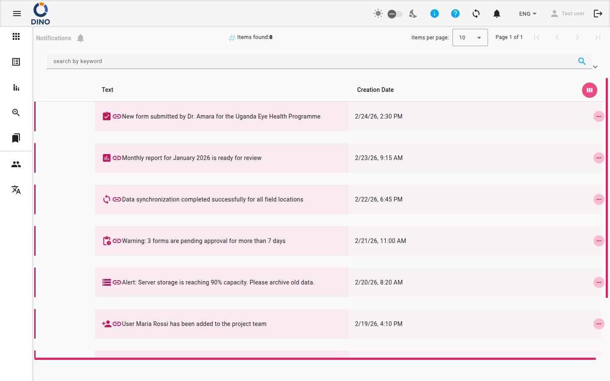

Notifiche
La pagina Notifiche mostra tutti i messaggi inviati dal sistema o dall'amministratore. Da qui puoi sfogliare, cercare e aprire le singole notifiche, comprese quelle che collegano direttamente a un'area pertinente dell'applicazione.

Leggere le tue notifiche
L'elenco mostra ogni notifica ricevuta, con il testo del messaggio e la data di creazione.
Le notifiche non ancora aperte appaiono evidenziate nell'elenco, così da poterle individuare subito. Una piccola icona di collegamento accanto al testo del messaggio indica che la notifica, se cliccata, ti porterà in un'altra posizione.
Il numero totale di notifiche corrispondenti alla ricerca corrente viene mostrato all'inizio della pagina.
Ricerca e filtri
Usa la barra dei filtri sopra l'elenco per restringere i risultati.
Ricerca per parola chiave
- Clicca all'interno del campo cerca per parola chiave in cima all'elenco.
- Inizia a digitare una parola o frase presente nel testo della notifica.
- L'elenco si aggiorna automaticamente mentre scrivi.
- Per cancellare la ricerca, clicca sull'icona × che appare all'interno del campo.
Filtra per data
- Clicca sul campo Da data e seleziona una data di inizio dal calendario.
- Clicca sul campo A data e seleziona una data di fine.
- L'elenco mostrerà solo le notifiche create nell'intervallo di date specificato.
- Per rimuovere un filtro data, clicca sull'icona × accanto al campo corrispondente.
Navigare nell'elenco
Se ci sono più notifiche di quante ne entrino in una pagina, usa i controlli di paginazione in cima all'elenco per spostarti tra le pagine. Puoi saltare alla prima o all'ultima pagina, oppure avanzare o retrocedere di una pagina alla volta.
Aprire una notifica
Clicca su qualsiasi riga per aprire quella notifica.
- Se la notifica contiene un collegamento (indicato dall'icona di link accanto al messaggio), cliccandola la segnerà come letta e ti porterà direttamente alla pagina pertinente dell'applicazione.
- Se la notifica non contiene un collegamento, cliccandola espanderà la riga per mostrare il contenuto completo direttamente al suo interno.
Per comprimere una notifica espansa, clicca di nuovo sulla sua riga.
Per espandere o comprimere tutte le righe in una volta, usa il pulsante piega/svolgi sopra l'elenco.
Personalizzare le colonne
Puoi modificare quali colonne sono visibili nell'elenco.
- Clicca sul pulsante selettore di colonne (icona a griglia) nell'angolo in alto a destra dell'intestazione della tabella.
- Si aprirà un pannello che mostra tutte le colonne disponibili.
- Attiva o disattiva le colonne che vuoi mostrare o nascondere.
- Chiudi il pannello al termine: la selezione viene applicata immediatamente.
Segna come letto
Quando clicchi su una notifica che ha un collegamento, viene automaticamente segnata come letta. Le notifiche senza collegamento non vengono segnate come lette automaticamente quando le espandi.